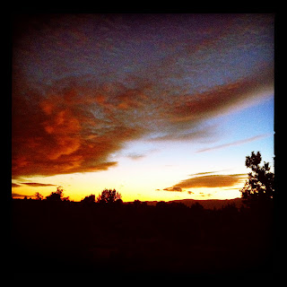

Recovered weblog entry
Another sunset image?!?

Developed in Lightbox for iPhone
Yet another twee sunset.
I so enjoy sharing them, though.

Recovered weblog entry

Developed in Lightbox for iPhone
Yet another twee sunset.
I so enjoy sharing them, though.